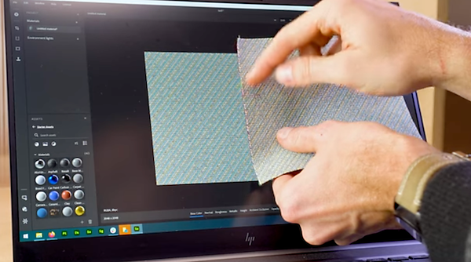
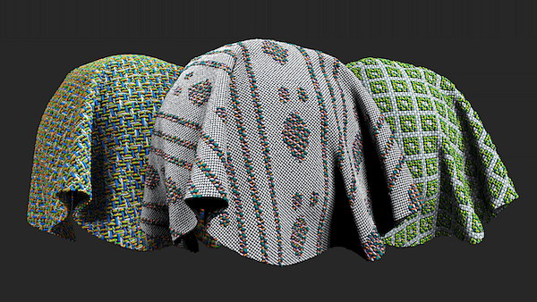
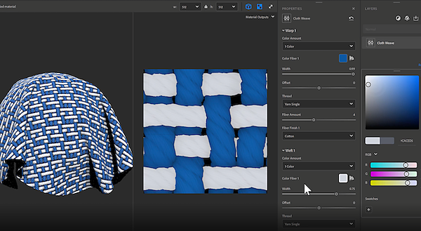
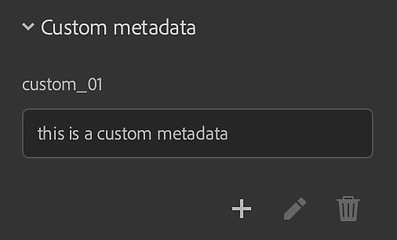
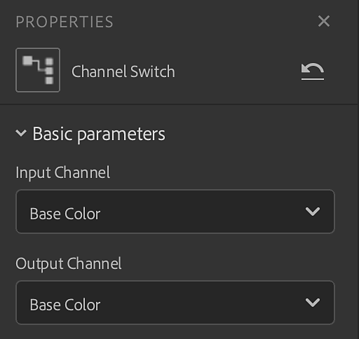
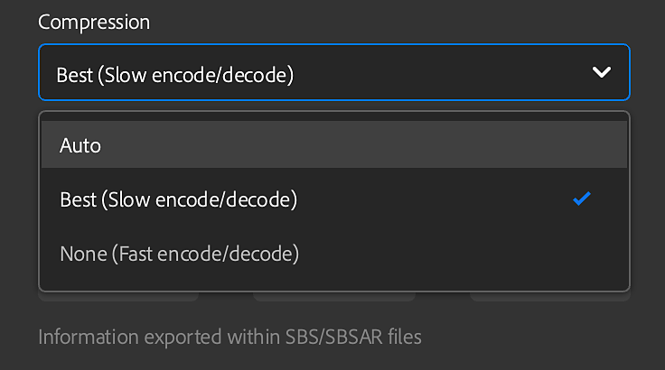
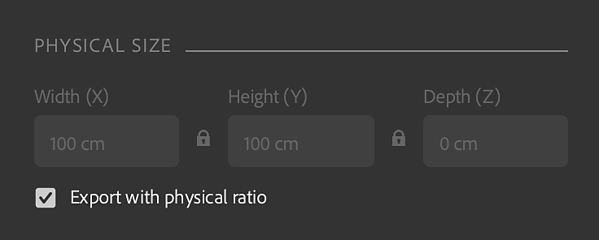

Set .sbsar file compression setting
Substance 3D Sampler 3.2 introduces an end-to-end material digitization workflow that captures and processes the material physical size, new filters as Cloth Weave and Channel Switch and the ability to create custom metadata.
Release date: 25 January, 2022
A new material scanning workflow that captures and processes the physical size of materials is introduced in this release.
Match the actual physical size of your samples/images in a digital context to create physically accurate materials in any software.

Brand new Generator is added in this release. The Cloth Weave allows you to create and design cloth fabrics with custom weave patterns.


Add custom metadata to your materials. All custom metadata will be included in the material file (SBSAR) to ensure a more efficient workflow for sharing digital materials across applications.

With Channel Switch you can now switch the channels of the output maps of the material.

New export features has been added to this release.
Set .sbsar file compression setting

Set the graph type when exporting a .sbs(ar) file
Keep physical ratio for EXR, JPEG, PNG, TARGA, TIFF

(Released 25 January, 2022)
Added:
Fixed:
Known Issues: